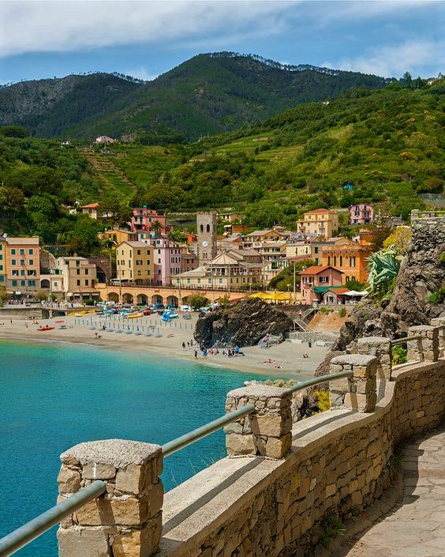

Monterosso je najsjevernije selo „naslonjeno“ na brdo Sv. Kristofora te je podijeljeno u dva dijela: stari i novi dio. Stari dio smješten je među uskim, krivudavim i strmim ulicama arhaičnog utvrđenja naslonjenog na brdo, a novi dio se prostire uz samu obalu i dugačku plažu, gdje se nalazi najveći broj hotela i restorana.

Monterosso al Mare
Znamenitosti
Na prijelazu između starog i novog dijela nalazi se trg na kojem se nalaze crkva Sv. Ivana iz 13. stoljeća sa zvonikom i stražarnicom, ruševinama starog dvorca iz 17. stoljeća i kapucinskim samostanom.
Plaže
U Monterossu se nalaze i dvije najveće plaže u cijelom nacionalnom parku, stoga mnogi tvrde da ovo selo ima i najljepše plaže od svih pet sela.